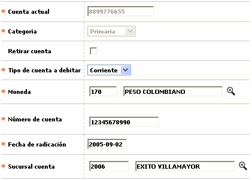
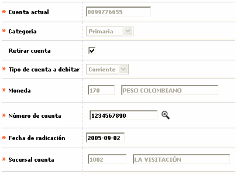

Novedad adicionar / eliminar cuenta
Mediante esta opción que se invoca desde Generación de novedades débito se registra la novedad mediante la cual se asocia una nueva cuenta a una tarjeta débito o se elimina una cuenta ya existente.
Cuando la tarjeta seleccionada solo tiene asociada una cuenta y se intenta eliminar mediante esta novedad, el sistema valida la información y no permite ejecutar la acción con lo que se garantiza que la tarjeta siempre tiene como mínimo una cuenta principal asociada.

Eliminación de cuenta:

Descripción de campos
Cuenta actual |
En este campo de salida se muestra el número de la cuenta principal asociada a la tarjeta actualmente. |
Categoría |
Campo tipo combo que indica la categoría correspondiente a la cuenta desplegada en el campo anterior. |
Retirar cuenta |
En este check se marca para indicarle al sistema que la acción a ejecutar mediante la novedad es el retiro o eliminación de la cuenta. |
Tipo cuenta a debitar |
Campo obligatorio tipo combo que se habilita solamente si el campo retirar cuenta se encuentra desmarcado y que permite seleccionar entre Ahorros, Corriente o Rotativo el tipo de cuenta a asociar con la tarjeta débito. |
Moneda |
En este campo obligatorio que se habilita solamente si el campo retirar cuenta se encuentra desmarcado y que cuenta con lista de valores, se selecciona la moneda en la que se encuentra denominada la cuenta que se va a asociar a la tarjeta. |
Número de cuenta |
Campo obligatorio que funciona de la siguiente manera. Si el campo Retirar cuenta se encuentra marcado, habilita una lista de valores de la cual el usuario selecciona la cuenta que desea eliminar. Cuando el campo Retirar cuenta está desmarcado, es decir, la acción a ejecutar mediante la novedad es adicionar una nueva cuenta, este campo es editable y permite digitar el número de la cuenta a asociar con la tarjeta débito. |
Fecha radicación |
En este campo obligatorio se registra en formato YYYY-MM-DD la fecha en la que se ingresa la novedad en el sistema. |
Sucursal cuenta |
Campo obligatorio que funciona de la siguiente manera. Si el campo Retirar cuenta se encuentra marcado, este campo es de salida y despliega la sucursal asociada con la cuenta seleccionada para ser eliminada. Cuando el campo Retirar cuenta está desmarcado, es decir, la acción a ejecutar mediante la novedad es adicionar una nueva cuenta, este campo es editable y permite digitar el código de la sucursal de la entidad a la que pertence la cuenta a asociar con la tarjeta débito. |